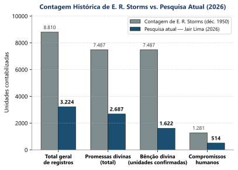
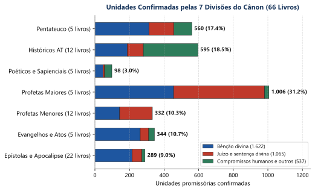
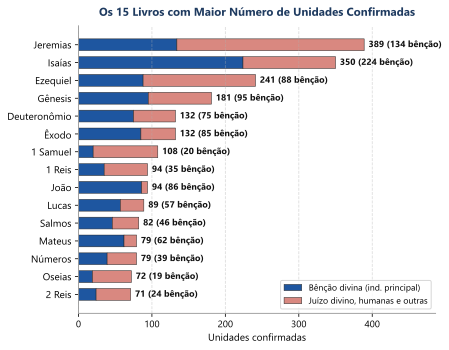
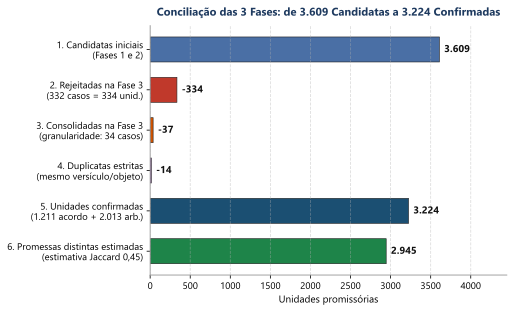

Sobre a pesquisa
O Observatório das Promessas Bíblicas é uma iniciativa de pesquisa de Jair Lima, desenvolvida a partir da investigação integral dos 66 livros do cânon protestante, utilizando como referência textual a Bíblia Almeida Livre.
O estudo foi estruturado em três etapas de identificação, conferência e arbitragem exegética, com auxílio de ferramentas computacionais de análise textual e processamento de linguagem natural.
A metodologia permitiu identificar, classificar e organizar 3.224 unidades promissórias, das quais se estimam 2.945 compromissos distintos.
Os resultados, critérios metodológicos, catálogos e memórias de cálculo são disponibilizados publicamente, permitindo sua consulta, verificação e utilização em estudos posteriores.
A concepção, a direção intelectual e a responsabilidade autoral da pesquisa pertencem a Jair Lima.
Resultados da investigação em números
Distinção metodológica rigorosa entre as grandezas: A pesquisa diferencia estritamente: (1) a contagem efetiva de unidades confirmadas (3.224 ocorrências textuais promissórias verificadas no corpus, sendo 1.622 de bênção divina); (2) a total de promessas distintas estimadas por agrupamento lexical (2.945 compromissos distintos no total e 1.481 de bênção divina no limiar de Jaccard de 0,45, após descontar reafirmações e relatos paralelos); e (3) a projeção estatística corrigida pela taxa empírica de revocação de 0,84 (3.506 no total e 1.763 de bênção divina), que constitui exercício analítico de sensibilidade derivado de amostra piloto e não uma medição exata de todas as promessas existentes.
A questão central: quantas promessas existem na Bíblia?
Responder quantas promessas existem na Bíblia exige enfrentar antes uma pergunta hermenêutica fundamental: o que constitui uma promessa nas Escrituras Sagradas? Diferentemente da contagem de palavras, versículos ou capítulos, atividade consolidada desde a tradição massorética, a identificação de uma promessa não depende apenas da presença do vocábulo "promessa" nem do simples emprego de verbos no tempo futuro.
Nas Escrituras, Deus e os agentes históricos prometem mesmo quando o termo "promessa" não é pronunciado, como no protoevangelho de Gênesis 3.15, no chamado de Abraão em Gênesis 12.1-3 ou na aliança davídica de 2 Samuel 7.12-16. Em sentido inverso, nem toda frase no tempo futuro constitui uma promessa: as Escrituras contêm mandamentos, advertências condicionais, provérbios morais de sabedoria, descrições históricas, confissões doutrinárias em terceira pessoa e orações devocionais.
Esta pesquisa submeteu a totalidade dos 31.104 versículos do cânon protestante a uma definição exegética explícita fundamentada na teoria dos atos de fala comissivos: conta-se como unidade promissória toda declaração textual em que um promitente identificável assume perante um destinatário reconhecível o compromisso futuro ou continuado de realizar, garantir, manter ou executar determinado benefício ou juízo. O resultado substitui estimativas anônimas por um catálogo verificável versículo a versículo.
Uma nova abordagem para o estudo das promessas bíblicas
A revisão bibliográfica realizada nas bases acadêmicas internacionais demonstra que, embora existam antologias pastorais clássicas desde o século XVIII e bases morfossintáticas de excelência para o hebraico e o grego bíblicos, faltava aos estudos bíblicos um catálogo integral, estruturado e auditável dos compromissos promissórios do cânon. Sem atribuir exclusividade absoluta sobre iniciativas não indexadas nas bases consultadas, esta pesquisa reúne onze diferenciais metodológicos articulados:
1. Investigação integral do cânon
Exame sequencial de 100% dos 66 livros, 1.189 capítulos e 31.104 versículos do cânon protestante, sem depender de coletâneas prévias.
2. Definição operacional de promessa
Aplicação consistente do critério de ato comissivo (promitente, objeto prometido futuro ou continuado e destinatário reconhecível).
3. Classificação sistemática em 10 categorias
Distinção precisa entre bênção divina, juízo divino, sentença divina, garantias apostólicas, bênção e juízo patriarcais, compromissos humanos e promessas adversárias.
4. Conferência cruzada independente
Duas etapas iniciais de análise textual conduzidas de maneira independente sobre todo o corpus para medir convergências e divergências reais.
5. Arbitragem exegética das divergências
Terceira etapa de avaliação dedicada aos 1.808 casos de identificação unilateral ou divergência classificatória, eliminando aprovações automáticas sem revisão.
6. Promitentes, comunicadores e destinatários
Separação formal entre a origem divina do compromisso e o comunicador humano (profeta, apóstolo ou personagem) que anuncia ou recorda a promessa em 1.487 registros.
7. Promessas, reafirmações e cumprimentos
Preservação das 3.224 ocorrências textuais no catálogo bruto aliada ao agrupamento lexical para estimar 2.945 promessas distintas estimadas.
8. Critérios documentados de inclusão e exclusão
Separação fundamentada entre promessas, máximas sapienciais gerais (Provérbios), declarações doutrinárias em 3ª pessoa (Ec 12.14) e votos devocionais humanos.
9. Disponibilização pública dos dados
Acesso aberto e permanente ao catálogo completo em CSV, Excel e JSONL para cada um dos 64 livros com registros confirmados.
10. Reprodutibilidade dos cálculos
Memória de cálculo aritmética integral, análise de sensibilidade de limiar (0,35 a 0,65) e scripts de validação abertos.
11. Teologia bíblica e humanidades digitais
Integração entre rigor exegético, teoria hermenêutica dos atos de fala e análise computacional de corpus a serviço da compreensão das Escrituras.
Matriz comparativa com o estado da arte
| Dimensão Analítica | Samuel Clarke (1720 / 1738) | Everek R. Storms (1956) / Lockyer (1962) | Corpora Morfossintáticos (ETCBC / MACULA / STEPBible) | Pesquisa Atual: Jair Lima (2026) |
|---|---|---|---|---|
| Cobertura do cânon | Seletiva (tópicos devocionais) | 66 livros (leitura individual manual) | 66 livros (hebraico e grego) | 66 livros, 1.189 capítulos, 31.104 versículos (100%) |
| Unidade de registro auditável | Tópicos pastorais com versículos | Apenas totais agregados publicados (8.810 / 7.487) | Morfema, palavra e oração sintática | 3.224 unidades catalogadas com ID (P-LIV-NNNN) |
| Definição operacional | Consolação espiritual e deveres | Critérios internos caso a caso não publicados (inclui votos do homem a Deus) | Gramatical e sintática (sem camada promissória) | Ato comissivo futuro/continuado com promitente, objeto e destinatário |
| Verificação e arbitragem | Seleção autoral única | Contagem manual única sem conferência cruzada | Anotação morfossintática | 3 etapas: conferência cruzada + arbitragem nos 1.808 casos divergentes |
| Distinção unidades vs. distintas | Não | Não | Não aplicável | 3.224 unidades confirmadas e 2.945 promessas distintas estimadas |
| Conjunto de dados público | Livro impresso em domínio público | Catálogo individual não localizado | Sim (morfologia e sintaxe) | Sim: CSV, Excel, JSONL, memória de cálculo e scripts abertos |
O mito das oito mil promessas
A cifra de oito mil promessas bíblicas, frequentemente repetida em sermões e obras devocionais como se fosse um dado estabelecido pelas próprias Escrituras, tem origem histórica documentada: trata-se do levantamento manual realizado entre 1954 e 1956 por Everek Richard Storms (1914 a 1995), professor e historiador canadense ligado à United Missionary Church em Kitchener, Ontário. Durante sua vigésima sétima leitura da Bíblia, Storms buscou responder a uma lenda popular que falava em trinta mil promessas. Seu recenseamento foi noticiado pela revista Time em 24 de dezembro de 1956 (seção Religion, "Promises") e posteriormente difundido por Herbert Lockyer em All the Promises of the Bible (Grand Rapids: Zondervan, 1962). Séculos antes, em 1720, Samuel Clarke (com segunda edição em 1738 recomendada por Isaac Watts) havia compilado promessas bíblicas por tópicos pastorais, sem finalidade de recenseamento estatístico.
Storms contabilizou 8.810 promessas: 7.487 de Deus ao homem, 991 de um ser humano a outro, 290 do homem a Deus, 28 de anjos, 9 de Satanás, 2 de Deus Pai a Deus Filho, 2 de espíritos malignos ao Senhor e 1 de um homem a um anjo. Como o catálogo versículo a versículo de suas 8.810 anotações não foi publicado nas fontes históricas disponíveis, não é possível auditar individualmente seus registros nem atribuir-lhe critérios internos que a documentação não preserva.
A divergência entre os 8.810 registros históricos de Storms e as 3.224 unidades confirmadas (2.945 promessas distintas estimadas) na presente pesquisa não autoriza classificar o levantamento anterior como falso. Demonstra que a contagem histórica não foi reproduzida pela metodologia adotada neste estudo — que exige ato comissivo verificável, exclui votos devocionais do homem a Deus e máximas sapienciais sem falante comissivo em primeira pessoa, separa bênção (1.622 unidades) de juízo divino (1.065 unidades) e disponibiliza todos os registros para verificação pública.

Figura 1: Comparação entre os totais históricos divulgados por Everek R. Storms (1956) e os resultados auditáveis da pesquisa atual de Jair Lima (2026).
Distribuição das dez categorias promissórias
Para evitar que promessas de naturezas e origens distintas fossem misturadas em um único número opaco, as 3.224 unidades confirmadas foram classificadas em dez categorias taxonômicas que distinguem a origem do compromisso, sua polaridade (bênção/benefício ou juízo/prejuízo) e a autoridade do promitente:
| Categoria de Classificação | Código Técnico | Natureza e Escopo Teológico | Unidades Confirmadas | % do Total |
|---|---|---|---|---|
| Bênção divina (Indicador Principal) | divina_bencao |
Compromissos divinos diretos ou relatados de graça, aliança, proteção, provisão, salvação e restauração | 1.448 | 44,91% |
| Juízo divino | divina_juizo |
Compromissos e oráculos divinos de retribuição, disciplina pactual e punição histórica ou escatológica | 952 | 29,53% |
| Compromisso humano (benefício) | humana_beneficio |
Promessas, alianças e juramentos assumidos por agentes humanos em nome próprio para benefício de outrem | 432 | 13,40% |
| Garantia apostólica de bênção (Ind. Principal) | apostolica_garantia_bencao |
Garantias promissórias de graça, ressurreição e vida eterna enunciadas com autoridade apostólica no NT | 161 | 4,99% |
| Compromisso humano (prejuízo) | humana_prejuizo |
Juramentos ou ameaças comissivas de dano assumidas por personagens humanos em nome próprio | 82 | 2,54% |
| Sentença divina | divina_sentenca |
Decretos judiciais solenes pronunciados por Deus sobre indivíduos, dinastias ou nações | 73 | 2,26% |
| Garantia apostólica de juízo | apostolica_garantia_juizo |
Declarações apostólicas comissivas de retribuição e juízo divino futuro | 37 | 1,15% |
| Promessa adversária ou falsa | adversaria_ou_falsa |
Ofertas enganosas de Satanás, da serpente, de falsos profetas (como Hananias) ou de inimigos de Deus | 23 | 0,71% |
| Bênção patriarcal (Indicador Principal) | patriarcal_bencao |
Bênçãos testamentárias proféticas transmitidas pelos patriarcas em Gênesis | 13 | 0,40% |
| Juízo patriarcal | patriarcal_juizo |
Sentenças proféticas restritivas pronunciadas no contexto testamentário patriarcal | 3 | 0,09% |
| Total Consolidado | 1.622 de bênção divina (50,31%) • 1.065 de juízo/sentença (33,03%) • 514 humanas (15,94%) • 23 adversárias (0,71%) | 3.224 | 100,00% |

Figura 2: Distribuição das 3.224 unidades promissórias confirmadas nas dez categorias de classificação.

Figura 3: Distribuição pelas sete divisões do cânon protestante (Profetas Maiores concentram 1.006 unidades; Livros Históricos, 595; Pentateuco, 560).

Figura 4: Os 15 livros bíblicos com maior volume de unidades confirmadas, liderados por Jeremias (389), Isaías (350), Ezequiel (241) e Gênesis (181).
As três etapas metodológicas da pesquisa
Identificação Inicial
Análise sequencial dos 66 livros, 1.189 capítulos e 31.104 versículos da Bíblia Almeida Livre, com mapeamento de cobertura versículo a versículo, extração de âncora textual literal e classificação de origem, natureza, promitente, destinatário e condição.
Conferência Cruzada Independente
Segunda análise integral dos 1.189 capítulos conduzida de maneira independente, sem acesso aos resultados da Etapa 1. O pareamento por sobreposição de versículos e âncoras confirmou 1.211 unidades por acordo direto e identificou 1.808 casos divergentes.
Arbitragem Exegética
Avaliação individualizada de todos os 1.808 casos de identificação unilateral ou divergência classificatória: 332 casos foram rejeitados como falsos positivos (334 unidades), 37 subdivisões excedentes foram consolidadas em 34 casos e 2.013 unidades foram confirmadas por arbitragem.
Catálogo e Agrupamento Lexical
Remoção de 14 duplicatas técnicas estritas, recuperação integral de 276 resumos, separação entre promitente e comunicador humano (1.487 registros) e agrupamento lexical de Jaccard: 3.224 unidades confirmadas e 2.945 promessas distintas estimadas.
| Etapa de Conciliação Aritmética | Unidades / Casos | Efeito Metodológico |
|---|---|---|
| Unidades candidatas inicialmente identificadas (Etapas 1 e 2) | 3.609 | Levantamento preliminar antes da arbitragem de terceira etapa |
| (−) Unidades em casos rejeitados como falsos positivos na Etapa 3 | -334 | 332 casos rejeitados (mandamentos sem garantia, desejos votivos, relatos consumados; 2 casos continham 2 unidades) |
| (−) Subdivisões excedentes consolidadas por granularidade na Etapa 3 | -37 | 34 casos confirmados na formulação mais coesa (evitando contagem múltipla do mesmo compromisso) |
| (−) Duplicatas técnicas estritas removidas | -14 | Registros com mesma referência, mesma categoria e mesmo objeto prometido |
| (=) Unidades promissórias confirmadas no catálogo final | 3.224 | 1.211 por acordo direto + 2.013 por arbitragem exegética (zero candidatos pendentes) |

Figura 5: Funil de conciliação aritmética das três etapas metodológicas (3.609 − 334 − 37 − 14 = 3.224).

Figura 6: Impacto da recuperação dos 276 resumos e curva de sensibilidade das promessas distintas estimadas entre os limiares 0,35 (2.729) e 0,65 (3.096).
Consulta interativa ao catálogo das 3.224 unidades promissórias
Explore abaixo todas as 3.224 unidades promissórias confirmadas pela pesquisa. Utilize os filtros para pesquisar por livro bíblico, categoria taxonômica, polaridade (bênção ou juízo), promitente, comunicador humano, destinatário, etapa de confirmação ou palavras do resumo exegético:
| Código ID | Referência | Categoria | Objeto Prometido (Resumo Exegético) | Promitente e Comunicador | Destinatário | Validação | Cap. Livro |
|---|
Metodologia resumida
1. Definição operacional e critérios de exclusão
A pesquisa adota uma definição operacional fundamentada na pragmática e na teoria dos atos ilocucionários comissivos: uma unidade promissória requer um promitente identificável que assuma o compromisso futuro ou continuado de realizar, garantir ou executar algo em relação a um destinatário reconhecível. Ficam excluídos do cômputo: (a) mandamentos e imperativos sem garantia de benefício; (b) saudações e desejos votivos humanos sem obrigação assumida pelo falante; (c) relatos históricos de eventos já consumados sem projeção futura; (d) máximas sapienciais gerais de causa e efeito moral sem falante que se obrigue em primeira pessoa; (e) afirmações doutrinárias em terceira pessoa sobre atributos divinos sem forma de oráculo promissório; e (f) votos devocionais do homem a Deus.
2. Comportamento dos livros sapienciais e poéticos (Provérbios, Eclesiastes e Lamentações)
O rigor dessa definição explica por que 64 dos 66 livros examinados possuem registros catalogados, enquanto Eclesiastes e Lamentações encerraram com zero unidades promissórias confirmadas e Provérbios registrou apenas um compromisso explícito (Pv 1.13-14, P-PRO-0001, onde o grupo de pecadores assume compromisso em primeira pessoa do plural do futuro perante o jovem). As mais de seiscentas máximas de Provérbios e noventa de Eclesiastes foram mapeadas como princípios sapienciais gerais. Em Eclesiastes 12.14 ("Porque Deus há de trazer a juízo toda obra...") e em Lamentações 3.22-32, o texto enuncia em terceira pessoa a doutrina do juízo final e a confissão da misericórdia divina, sem que um promitente tome a palavra em primeira pessoa para obrigar-se perante um destinatário.
3. Distinção entre promitente divino e comunicador humano
Nos oráculos proféticos, narrativas históricas e garantias apostólicas, o catálogo distingue formalmente o promitente (Deus Pai, Filho, Espírito Santo ou Deus sem distinção de pessoa) do comunicador humano que profetiza, relata ou recorda a promessa (1.487 registros possuem comunicador humano identificado). Em 1 Crônicas 11.2 (P-1CH-0001), por exemplo, o promitente do compromisso de que Davi apascentaria Israel é o SENHOR, enquanto o comunicador que recorda e invoca essa palavra em Hebrom é "todo o Israel".
4. Declaração sobre o emprego de recursos computacionais e inteligência artificial
A concepção intelectual do estudo, a definição dos critérios exegéticos de inclusão e exclusão, o desenho metodológico das três etapas, os algoritmos de verificação programática e a responsabilidade autoral pertencem integralmente a Jair Lima. Ferramentas computacionais de análise textual e processamento de linguagem natural, incluindo modelos de linguagem operando sob isolamento de contexto e conferência cruzada, foram utilizadas como instrumentos técnicos de análise e arbitragem, submetidos à validação determinística de estrutura, conferência literal das âncoras contra a Bíblia Almeida Livre e conciliação aritmética integral. As especificações técnicas de implementação para reprodução computacional encontram-se no apêndice DOCUMENTACAO_TECNICA_REPRODUTIBILIDADE.md.
Artigo científico
Título: Quantas promessas existem na Bíblia? Uma análise computacional e exegética dos 66 livros do cânon protestante (How Many Promises Are in the Bible? A Computational and Exegetical Analysis of the 66 Books of the Protestant Canon)
Autor: Jair Lima (Lima Editora do Brasil, 2026) • Status editorial: Preprint de pesquisa, ainda não submetido à avaliação acadêmica por pares.
Resumo: Quantificar as promessas bíblicas exige distinguir compromissos de outras formas de discurso presentes nas Escrituras. Este estudo investiga a totalidade dos 66 livros, 1.189 capítulos e 31.104 versículos do cânon protestante, tendo como referência a Bíblia Almeida Livre. A metodologia combina definição operacional de promessa, duas análises textuais independentes assistidas por computador, arbitragem das divergências e consolidação dos registros. Das 3.609 unidades inicialmente identificadas, 3.224 foram confirmadas segundo os critérios adotados, abrangendo 4.373 versículos (14,1% do corpus). O agrupamento dos registros por similaridade lexical, no limiar de Jaccard de 0,45, identificou 2.945 promessas distintas estimadas. O indicador de bênção divina reuniu 1.622 unidades, correspondentes a 1.481 compromissos distintos estimados. A comparação com a contagem histórica de 8.810 promessas atribuída a Everek R. Storms demonstra que essa cifra não foi reproduzida pelo método empregado. A contribuição do estudo consiste na organização de um catálogo estruturado, com critérios explícitos, memória de cálculo e documentação aberta à verificação.
Palavras-chave: Promessas bíblicas; Exegese bíblica; Teologia bíblica; Teoria dos atos de fala; Humanidades digitais; Linguística de corpus; Bíblia Almeida Livre.
Downloads do conjunto de dados e documentação científica
Todos os arquivos abaixo estão hospedados diretamente no portal oficial do Observatório das Promessas Bíblicas e no repositório público, com integridade verificada e acesso gratuito sob licença aberta:
Catálogo Completo em CSV
Arquivo tabular universal (UTF-8 com BOM, 3.224 registros confirmados) com código ID, livro, referência, categoria, objeto prometido, promitente, comunicador, destinatário, validação e capítulo.
Catálogo Completo em Excel (.XLSX)
Planilha formatada para Microsoft Excel e LibreOffice Calc com cabeçalho congelado, filtros automáticos por coluna e as 3.224 unidades promissórias confirmadas.
Artigo Científico Revisado (PT/EN)
Versão integral revisada do artigo científico bilíngue com resumo, abstract, revisão da literatura, metodologia, resultados, tabelas, limitações e referências ABNT.
Memória de Cálculo Integral
Conciliação aritmética exata das três etapas (3.609 para 3.224), relação entre os 1.808 casos arbitrados e 1.843 decisões, impacto dos 276 resumos e exame de Pv, Ec 12.14 e Lm.
Relatório de Originalidade e Estado da Arte
Revisão bibliográfica internacional em português, inglês e espanhol e matriz comparativa de 7 dimensões analíticas.
Dicionário de Campos e Limitações
Especificação formal de todas as variáveis do conjunto de dados, relatório de limitações metodológicas e apêndice técnico de reprodutibilidade.
Sobre o pesquisador
Jair Lima é pastor sênior da Assembleia de Deus de Três Coroas (RS), jornalista registrado (MTE nº 0024314/RS), escritor, capelão e pesquisador. É membro da Academia de Letras dos Municípios do Rio Grande do Sul (ALMURS), membro da Convenção Geral das Assembleias de Deus no Brasil (CGADB), conselheiro da CIEPADERGS, membro do Instituto Brasileiro de Direito e Religião (IBDR) e coordenador do GEIC (Grupo Ecumênico de Igrejas Cristãs de Três Coroas).
Sua trajetória acadêmica e profissional articula a teologia bíblica e pastoral com a governança tecnológica, a investigação forense e a ciência de dados: é Especialista em Teologia (2024), Especialista em Direito Religioso (2025), com formação em Derecho y Religión pela Universidad Autónoma de Madrid (Espanha, 2025), Graduado em Redes de Computadores (2014), Pós-Graduado em Governança de Tecnologia da Informação (2015), Pós-Graduado em Tecnologia Google for Education (2019), Pós-Graduado em Investigação Forense e Perícia Criminal (2021), MBA em Contabilidade Empresarial (2022), Certificado Chronicle Security Operations Platform – Deep Dive (Google Cloud, 2024) e MBA em Design Thinking (2025).
Essa formação interdisciplinar fundamenta a metodologia do Observatório das Promessas Bíblicas, aplicando procedimentos de auditoria documental, verificação cruzada e análise computacional de corpus à investigação exegética das Escrituras. É autor e editor responsável da Bíblia Almeida Livre e da Bíblia Católica Livre, além de obras teológicas, históricas e devocionais publicadas pela Lima Editora do Brasil, como Simplesmente Servindo, Dicionário Bíblico Temático Pentecostal Clássico, Mil Dias com Jesus: A Jornada de Pedro, a Rocha e Os Sete Sinais e os 24 Milagres de Jesus.
Canais oficiais do pesquisador:
• E-mail institucional: jairslima@gmail.com
• Portal oficial: www.jairlima.com.br
• Publicações e perfis: https://linktr.ee/Jairslima
• Repositório de pesquisa no GitHub: github.com/jairslima/Promessas-da-Biblia-by-Jair-Lima
Referência bibliográfica e formas de citação
Para citar esta pesquisa, seu conjunto de dados ou o artigo científico em trabalhos acadêmicos, dissertações, teses, livros e artigos, utilize um dos padrões bibliográficos abaixo:
Padrão ABNT (NBR 6023) — Artigo Científico (Preprint)
Padrão ABNT (NBR 6023) — Conjunto de Dados e Observatório
Padrão APA (7th Edition)
BibTeX
Referências históricas e acadêmicas verificadas
- AUSTIN, John Langshaw. How to Do Things with Words. Oxford: Clarendon Press, 1962.
- BRIGGS, Richard S. Words in Action: Speech Act Theory and Biblical Interpretation. Edinburgh: T&T Clark, 2001.
- CLARKE, Samuel. A Collection of the Promises of Scripture, under their Proper Heads: Representing I. The Blessings Promised. II. The Duties to which Promises are Made. 2. ed. London: J. and J. Knapton, 1738. (1. ed. London: John Clark, 1720; inclui recomendação introdutória de Isaac Watts datada de 19 jan. 1738).
- LIMA, Jair. Bíblia Almeida Livre by Jair Lima. Três Coroas: Lima Editora do Brasil, 2026. Licenciada sob Creative Commons Atribuição-SemDerivações 4.0 Internacional (CC BY-ND 4.0).
- LIMA, Jair. As 3 Mil Promessas da Bíblia: Da criação à eternidade: a história de um Deus que cumpre sua Palavra. Três Coroas: Lima Editora do Brasil, 2026.
- LIMA, Jair. Quantas promessas existem na Bíblia? Uma análise computacional e exegética dos 66 livros do cânon protestante. Três Coroas, RS: Lima Editora do Brasil, 2026. 13 p. Preprint. Disponível em: https://jairslima.github.io/Promessas-da-Biblia-by-Jair-Lima/.
- LOCKYER, Herbert. All the Promises of the Bible: A Unique Compilation and Exposition of Divine Promises in Scripture. Grand Rapids: Zondervan Publishing House, 1962. 351 p.
- PROMISES. Time, New York, v. 68, n. 26, seção Religion, 24 dez. 1956. Registro histórico do levantamento de Everek Richard Storms (Kitchener, Ontário), com 8.810 promessas totais e 7.487 promessas de Deus ao homem.
- SEARLE, John R. Speech Acts: An Essay in the Philosophy of Language. Cambridge: Cambridge University Press, 1969.
- SEARLE, John R. Expression and Meaning: Studies in the Theory of Speech Acts. Cambridge: Cambridge University Press, 1979.
- THISELTON, Anthony C. New Horizons in Hermeneutics: The Theory and Practice of Transforming Biblical Reading. Grand Rapids: Zondervan, 1992.
- VANHOOZER, Kevin J. Is There a Meaning in This Text? The Bible, the Reader, and the Morality of Literary Knowledge. Grand Rapids: Zondervan, 1998.
Da pesquisa ao livro
As 3 Mil Promessas da Bíblia: Da criação à eternidade: a história de um Deus que cumpre sua Palavra
Os resultados desta investigação fundamentam a obra As 3 Mil Promessas da Bíblia: Da criação à eternidade: a história de um Deus que cumpre sua Palavra, de Jair Lima (Lima Editora do Brasil, 2026).
Em sete partes e 53 capítulos, o autor conduz o leitor por uma jornada histórica, teológica e espiritual, revelando como as promessas atravessam as gerações e encontram sua expressão nos propósitos eternos de Deus.
A pesquisa permanece aberta à consulta pública. O livro desenvolve sua dimensão narrativa, exegética e pastoral. O manuscrito comercial, os capítulos literários e as edições impressa e digital da obra são protegidos por direitos autorais e não integram o depósito público de dados.
Uma pesquisa para compreender as promessas. Uma obra para compreender aquele que promete.
Licenças e informações institucionais
O Observatório das Promessas Bíblicas adota um modelo de licenciamento em três camadas que concilia a ciência aberta com a proteção da integridade do texto bíblico e dos direitos autorais da obra literária comercial:
- Metadados analíticos, catálogos tabulares e memória de cálculo (
catalogo-digital-completo.csv,.xlsx,MEMORIA_DE_CALCULO.md): disponibilizados sob licença Creative Commons Atribuição 4.0 Internacional (CC BY 4.0), permitindo livre compartilhamento, verificação e reutilização acadêmica mediante crédito expresso a Jair Lima. - Scripts de verificação, cálculo e interface web (
scripts/,testes/,docs/): licenciados sob Licença MIT — Copyright (c) 2026 Jair Lima. - Texto bíblico de referência (Bíblia Almeida Livre by Jair Lima): licenciado sob Creative Commons Atribuição-SemDerivações 4.0 Internacional (CC BY-ND 4.0), vedada qualquer alteração da redação bíblica.
- Obra comercial (As 3 Mil Promessas da Bíblia): todos os direitos reservados a Jair Lima e Lima Editora do Brasil (2026).